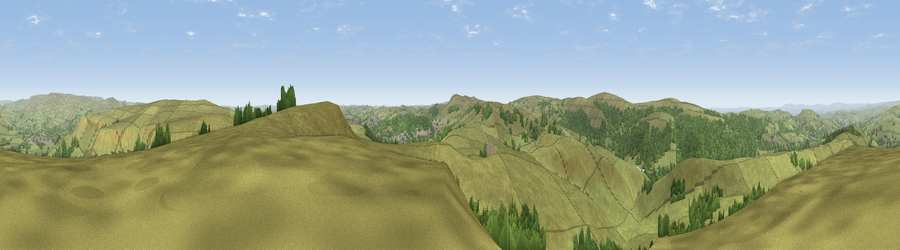

Combs Head - North West Top
#6633 in England · top 5% of its area beats it · near CombsThe view, rendered

A 360° render of this exact spot computed from the terrain model, tree cover and land cover — summer colours, afternoon light, calibrated against photographs of famous viewpoints. Real trees, hedges and buildings will differ in detail.
The panorama
Grey silhouette: terrain skyline in each direction (720 bearings, Earth curvature and refraction included). Dashed green: skyline with trees (+15 m) and buildings (+8 m) as obstacles. Blue strip: how far the ground is visible on each bearing.
Where the view opens
Wedge length = distance to the farthest visible ground on that bearing (vegetation-aware). Rings at 10, 25 and 50 km.
What fills the view
84% grassland · 15% woodland ·
Angular shares of the visible panorama (visual magnitude), not map area. Landscape diversity 0.21 (0–1 Shannon).
Key numbers
More beautiful places nearby
The staircase of upgrades: each row has a higher view potential than everything closer. Driving times are estimates from straight-line distance, calibrated against real road routing — check an actual route before setting out.
| Place | Direction | Drive | Score |
|---|---|---|---|
| Viewpoint near Kettleshulme | W · 4 km | ~9 min | 72.5 |
| Cats Tor | W · 4 km | ~10 min | 72.8 |
| Lord's Seat | NE · 10 km | ~20 min | 73.1 |
| Viewpoint near Meerbrook | SSW · 13 km | ~23 min | 73.5 |
| Viewpoint near Timbersbrook | SW · 18 km | ~31 min | 74.4 |
| Harrop Edge | NNW · 21 km | ~35 min | 74.6 |
| Wild Bank | NNW · 22 km | ~37 min | 76.2 |
| Viewpoint near Carrbrook | N · 24 km | ~40 min | 77.1 |
53.28124, -1.94561 · source: osm peak · position refined by local search. Computed location — check access rights before visiting.